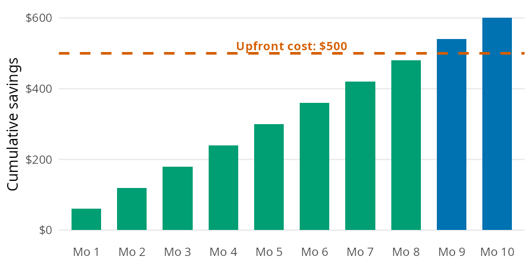

rent_share <- percent_of_income(expense = 960, income = 3200)
rent_share
#> [1] 30Most budgeting decisions come down to a handful of small calculations. You need to know how big a slice of your paycheck an expense takes and what a daily habit costs over a year. You also need to know what money spent today could have grown into, and how long an upfront purchase takes to pay for itself. The Budgeting chapter of the book builds each of these from scratch. In this vignette I’ll answer the same questions with percent_of_income(), to_annual(), to_monthly(), opportunity_cost(), and months_to_break_even(), using the chapter’s numbers so you can check every result against the book.
The budgeting functions
All five functions are vectorized, and they follow the conventions in perfinr: rates go in as decimals and ratios come out as percents.
| Function | Returns | Units |
|---|---|---|
percent_of_income() |
an expense as a share of income | percent (30 is 30%) |
to_annual() |
a daily, weekly, or monthly amount per year | dollars per year |
to_monthly() |
a daily, weekly, or annual amount per month | dollars per month |
opportunity_cost() |
what an amount could grow to if invested | dollars (rate is a decimal) |
months_to_break_even() |
months until savings cover an upfront cost | months, not rounded |
What share of income does an expense take?
The chapter’s first job example takes home $3,200 a month and pays $960 in rent. The question is how much of that paycheck rent claims.
Think of the monthly take home pay as a single bar. Rent is one slice of it, and the rest of the bar is what’s left for everything else:

percent_of_income() divides the width of the slice by the width of the whole bar, then multiplies by 100:
Rent takes 30% of take home pay. The result is a percent, not a decimal, so 30 means 30% (see the conventions table in perfinr). The expense and the income need to cover the same period. A monthly rent against a yearly salary gives a share that is off by a factor of 12.
What does a small habit cost over a year?
A $5 daily coffee doesn’t feel expensive, because you only ever pay $5 at a time. The same habit looks very different at longer time scales:

Each bar is the one before it scaled by the number of periods it contains. to_annual() makes the daily to yearly jump in one step:
coffee_year <- to_annual(amount = 5, period = "daily")
coffee_year
#> [1] 1825The coffee habit costs $1,825 a year. Suddenly it’s a real number you can evaluate.
Most budgets work in months
to_monthly() goes in the other direction. It converts a daily, weekly, or annual amount to a monthly one, which is the unit most budgets use. Here is the coffee habit per month:
coffee_month <- to_monthly(amount = 5, period = "daily")
coffee_month
#> [1] 152.2Coffee runs $152.20 a month, which matches the monthly bar above. The chapter’s second example converts $150 a week in groceries to a monthly amount:
groceries_month <- to_monthly(amount = 150, period = "weekly")
groceries_month
#> [1] 649.5Groceries come to $649.50 a month. That is more than four weeks’ worth, because a month holds about 4.33 weeks.
What could the money have become?
The chapter frames opportunity cost with a car. Buying a used one for $15,000 instead of a new one for $40,000 frees up $25,000, which the chapter invests at 7% a year. Every dollar spent isn’t just that dollar; it’s what that dollar could have become.

Each year multiplies the previous bar by 1.07. opportunity_cost() compounds the amount over the full horizon, with the rate as a decimal:
car_gap <- opportunity_cost(amount = 25000, rate = 0.07, years = 30)
car_gap
#> [1] 190306.4After 30 years, the $25,000 gap grows to about $190,306. That’s not a car payment difference; that’s a retirement chapter.
When does an upfront cost pay for itself?
Some purchases cost money now to save money later: a membership, a better phone plan, or a used bike for commuting. The chapter’s example is a $500 membership that saves $60 a month.

Each month the cumulative savings bar grows by $60, and break even is the first month that bar crosses the $500 line. months_to_break_even() divides the upfront cost by the monthly savings:
be_months <- months_to_break_even(upfront_cost = 500, monthly_savings = 60)
be_months
#> [1] 8.333333The membership pays for itself after 8.3 months. The result isn’t rounded. Use ceiling() to find the first whole month you come out ahead: month 9, the first bar above the line in the bar model. If you’ll keep the membership longer than that, it’s worth the upfront cost.
Variations
Vectorized inputs let one call answer several versions of the same question. The chapter’s periodic expenses are a good example. Setting aside one twelfth of each annual cost every month builds a sinking fund (money saved each month for a known future expense). to_monthly() converts every expense at once:
sinking <- data.frame(
expense = c("car insurance", "gifts", "car maintenance", "vacation"),
annual = c(1200, 600, 1200, 2400)
)
sinking$monthly <- to_monthly(amount = sinking$annual, period = "annual")
sinking
#> expense annual monthly
#> 1 car insurance 1200 100
#> 2 gifts 600 50
#> 3 car maintenance 1200 100
#> 4 vacation 2400 200Together these periodic expenses need $450 a month. When a bill arrives, the money is already there.
One call compares every time horizon
The same approach works for time horizons. Passing several values to years reproduces each checkpoint in the car bar model:
data.frame(
years = c(0, 5, 10, 20, 30),
value = opportunity_cost(amount = 25000, rate = 0.07, years = c(0, 5, 10, 20, 30))
)
#> years value
#> 1 0 25000.00
#> 2 5 35063.79
#> 3 10 49178.78
#> 4 20 96742.11
#> 5 30 190306.38Limits
to_monthly()uses rounded factors (30.44 days and 4.33 weeks per month), whileto_annual()uses 365 days and 52 weeks per year. A round trip through both functions drifts slightly. The weekly grocery bill gives a different yearly total depending on the path:A few other limits apply:
to_annual()accepts"daily","weekly", or"monthly", andto_monthly()accepts"daily","weekly", or"annual". Any otherperiodis an error.opportunity_cost()assumes the same return every year and ignores inflation, taxes, and fund fees.months_to_break_even()assumes the savings are the same every month and ignores what the upfront cost could have earned if invested.percent_of_income()andmonths_to_break_even()stop with an error whenincomeormonthly_savingsis zero or negative.
Putting it together
Back to the $3,200 first job budget. The sections above produced four monthly costs: rent, groceries, coffee, and sinking funds. percent_of_income() takes the whole column at once, so one call shows how much of the paycheck each category claims:
budget <- data.frame(
category = c("rent", "groceries", "coffee", "sinking funds"),
monthly = c(960, groceries_month, coffee_month, sum(sinking$monthly))
)
budget$percent <- round(percent_of_income(expense = budget$monthly, income = 3200), 1)
budget
#> category monthly percent
#> 1 rent 960.0 30.0
#> 2 groceries 649.5 20.3
#> 3 coffee 152.2 4.8
#> 4 sinking funds 450.0 14.1These four categories take 69.1% of take home pay, which leaves $988.30 a month for investments, savings, and fun money.
Coffee is the smallest line in the budget, but it’s also the easiest to change. The code below invests one year of coffee money at 7% for 30 years instead:
coffee_invested <- opportunity_cost(amount = coffee_year, rate = 0.07, years = 30)
coffee_invested
#> [1] 13892.37One year of $5 coffees could grow to about $13,892. That doesn’t mean you should give up coffee; it means the choice now has a price you can see. The Tracking Spending vignette applies the same idea to recurring costs with subscription_opportunity_cost().
Recap
Budgeting math is middle school math, and these five functions cover the calculations the chapter relies on most. percent_of_income() shows how big a slice each expense takes, to_annual() and to_monthly() put costs on the same time scale, and opportunity_cost() and months_to_break_even() put a price on spending decisions. Because each one is vectorized, a single call can compare a whole budget, a list of periodic expenses, or several time horizons.
- Budgeting in Personal Finance: a field manual
- Reference:
percent_of_income(),to_annual(),to_monthly(),opportunity_cost(),months_to_break_even() - Next: Managing Debt